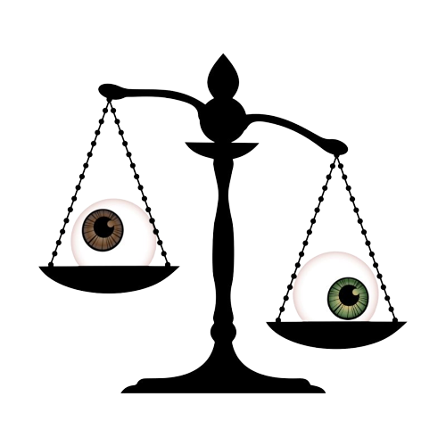
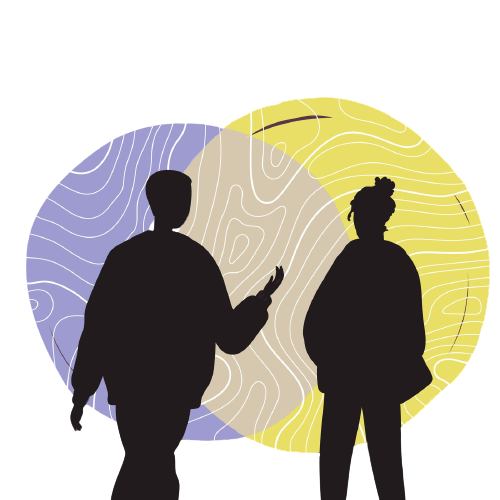

The Cal Restorative Justice Coalition (or Cal RJC) is a club dedicated to the implementation of restorative justice practices at California High School. Current projects include the creation of text sets and leading conversations about social issues at school. During the summer of ‘21, Cal RJC was created by a group of inspired freshmen who took the English justice and community class and wanted to see positive change in their community. Then, during the 2021-22 school year, the club officially began. The overall goal of the club is to reduce the impact and number of oppressive incidents on campus and heal those impacted by these incidents. The club welcomes anyone and everyone to take part and build a stronger, more diverse community.
What is Restorative Justice?
There are three main forms of justice:
Retributive
To understand what restorative justice is, one must first understand retributive justice, the most common form of justice in today’s
world and our current system, used in our school and government. In this form of justice, also called punishment justice, offenders are punished for their misdeeds.
For example, a person who steals from a convenience store would go to jail. Punishment justice has been an unsuccessful form of justice that rarely succeeds in preventing further crimes.
The problem with retributive justice is that it creates a cycle of harm. Rather than addressing the actual problem, it normalizes the concept of ‘an eye for an eye’, or revenge.

Restorative

As for restorative justice, it focuses on helping offenders understand the impact of their actions, and healing the bond between offender and victim with the help of a mediator.
It is important that both sides of the story are told so that all involved feel heard and healed. In addition, besides the communication that is exchanged, it is common for the victim
to request something from the offender to gain closure. It must be agreed upon by both parties and must be realistic. For example, if a person steals food from a convenience store,
restorative justice would have the store owner and thief meet with a mediator. During their conversation, the goal would be to understand why the thief stole the food, and help the owner
regain composure while also explaining the impact the thief’s actions had on them. The store owner, as the victim in need of closure, could request any number of things, from giving the
food back, to working to pay off the food, to drawing a mural on the store walls.
Of course, this is not the only way to enact restorative justice. There are a number of ways to accomplish the same goal of healing between parties. Cal RJC uses a variety of these methods.
For example, if a victim is uncomfortable with an in-person meeting with the offender, writing a letter or communicating through a third party are both viable options.
Transformative
Finally, transformative justice is the end goal of restorative justice. It focuses on changing the root cause of the problem. In our example from the above paragraphs on restorative
justice, if the thief was stealing because of lack of food, transformative justice would set up a food shelter in the area so the thief wouldn’t have to steal again. When crimes
are committed and communities harmed, it is important to recognize that victims aren’t the only ones in need of help, but offenders as well. In most cases, there is a reason behind
crimes that goes deeper than simply wanting to commit the act. More often than not, the offender was once a victim themselves.
Cal RJC’s goal is to divert justice practices away from retributive justice, and more towards restorative justice, and then eventually reach the implementation of transformative
justice in our school district.
Created by Power of Code
Power of Code is a club at Cal High focused on teaching students code and how to develop apps via tutoring sessions and meetings dedicated to the app development process.